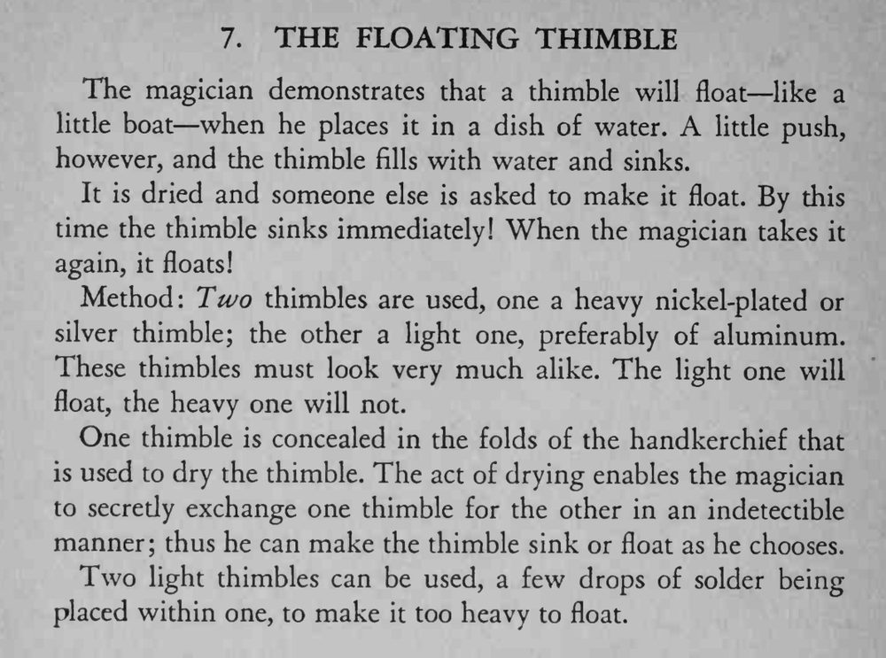

拇指套放在水碗里能像小船一样浮着，一推就进水沉下；请别人一试却总是沉，换回魔术师又浮起来。
两个拇指套外观要相近，擦干时的换手动作要自然，沉浮节奏别太快。

The magician demonstrates that a thimble will float— like a little boat when he places it in a dish of water. A little push, however, and the thimble fills with water and sinks. It is dried and someone else is asked to make it float. By this time the thimble sinks immediately! When the magician takes it again, it floats! Method: Two thimbles are used, one a heavy nickel-plated or silver thimble; the other a light one, preferably of aluminum. These thimbles must look very much alike. The light one will float, the heavy one will not. One thimble is concealed in the folds of the handkerchief that is used to dry the thimble. The act of drying enables the magician to secredy exchange one thimble for the other in an indetectible manner; thus he can make the thimble sink or float as he chooses. Two light thimbles can be used, a few drops of solder being placed within one, to make it too heavy to float.